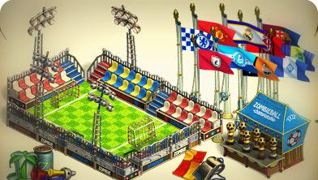

Получено: файл; исходный URL. Иллюстрация футбольного обновления с фанатской страницы; автор не установлен; исходный JPEG без перекодирования. Страница: источник.
Зомби на футболе — обновление 2012
историческая браузерная версия VK; редакция неизвестна- Тип
- История обновлений
- Версия и дата
- историческая браузерная версия VK; редакция неизвестна
Данные по источнику · историческая VK; редакция неизвестна · 22.06 — дата в заголовке; 11.07.2012 — дата страницы
Предварительно: Фанатская заметка, содержащая ссылку на сообщество ZombieMem; независимость от других копий не установлена. Дата заголовка и публикации различаются.. Требуется сверка.
- Квест
- Источник перечисляет покупку причёски и Сувенирной лавки и посещение трёх друзей; точные условия и последовательность этапов не уточнены.
- Декор
- Упомянуты 10 футбольных флагов по 25 зомбаксов и 23 декорации за монеты; цены исторические.
- Сувенирная лавка
- По заметке посещать можно было 20 раз в сутки; за стуки упоминаются предметы новой коллекции, шёлк и белая краска. Кому именно выдаются все предметы и актуальность лимита необходимо проверить.
- Коллекция
- Футбольная коллекция: автор указывает награду 200 опыта и батарейку. Источник говорит о получении элементов при принятии стуков в лавке; вероятности не указаны.


Связанные сущности
нет проверенных связей — требуется сверка.